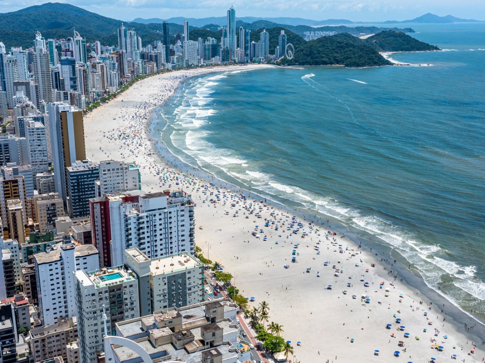

Santa Catarina é um estado da região Sul do Brasil conhecido por suas belas praias, forte economia e rica diversidade cultural. Sua capital, Florianópolis, é famosa pelas paisagens naturais, qualidade de vida e turismo. O estado possui destaque nos setores industrial, tecnológico, agrícola e turístico, além de apresentar um dos melhores índices de desenvolvimento humano do país. A colonização europeia, principalmente de alemães, italianos e açorianos, influenciou fortemente a cultura catarinense, presente na arquitetura, culinária e festas típicas. Entre os principais atrativos naturais estão praias como Praia da Joaquina e cidades da serra catarinense que atraem visitantes durante o inverno.
